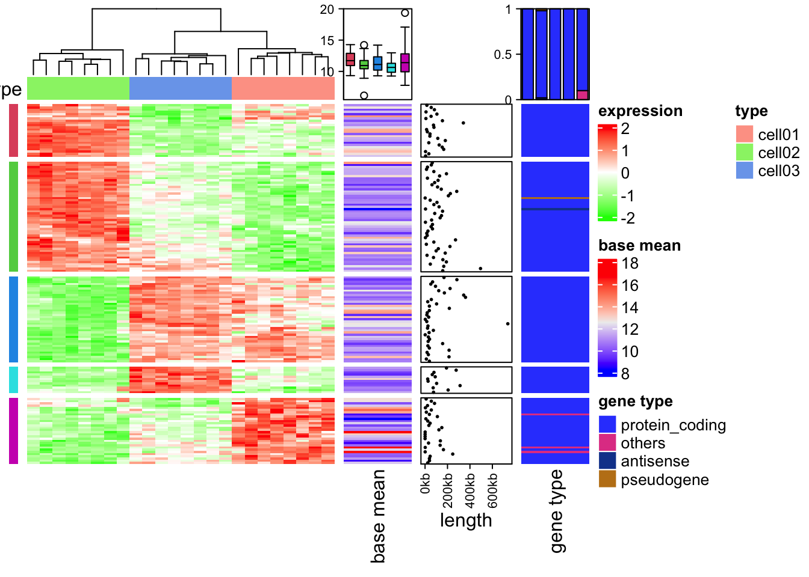

![]()
A heatmap (or heat map) is another way to visualize hierarchical clustering. It’s also called a false colored image, where data values are transformed to color scale.
Heat maps allow us to simultaneously visualize clusters of samples and features. First hierarchical clustering is done of both the rows and the columns of the data matrix. The columns/rows of the data matrix are re-ordered according to the hierarchical clustering result, putting similar observations close to each other. The blocks of ‘high’ and ‘low’ values are adjacent in the data matrix. Finally, a color scheme is applied for the visualization and the data matrix is displayed. Visualizing the data matrix in this way can help to find the variables that appear to be characteristic for each sample cluster.
expr <- readRDS(system.file(package = "ComplexHeatmap", "extdata", "gene_expression.rds"))
head(expr)
## s1_cell01 s2_cell02 s3_cell03 s4_cell01 s5_cell02 s6_cell03 s7_cell01
## gene1 11.116315 12.659864 11.380503 10.843436 12.294022 11.078295 11.083354
## gene2 10.947069 8.560271 11.370300 10.217849 8.863639 10.662690 9.595477
## gene3 9.452391 8.037535 8.938325 10.489147 8.402186 8.014418 9.437550
## gene4 12.555035 11.832308 11.475035 13.942389 10.607904 11.093560 13.494761
## gene5 13.409375 11.254771 13.975412 12.089657 12.501463 12.960217 12.122823
## gene6 10.047402 7.259497 10.345380 9.911114 8.219643 10.659074 11.340390
## s8_cell02 s9_cell03 s10_cell01 s11_cell02 s12_cell03 s13_cell01
## gene1 12.831572 11.249163 10.455120 12.764083 11.19787 10.323888
## gene2 7.961365 10.503118 9.752049 8.418864 10.42819 9.476824
## gene3 7.036521 8.459766 10.182057 7.625993 8.92803 9.667321
## gene4 11.164252 11.803030 14.052338 11.198188 11.14581 14.066414
## gene5 11.046727 13.273749 11.356355 10.301182 13.31146 13.028308
## gene6 8.494383 10.704764 9.886160 7.856373 10.37793 9.784094
## s14_cell02 s15_cell03 s16_cell01 s17_cell02 s18_cell03 s19_cell01
## gene1 13.012431 11.317087 10.406549 12.710788 11.413241 10.696686
## gene2 9.375891 11.239524 9.314513 8.470325 10.206657 9.948435
## gene3 6.948153 8.834066 9.591642 7.650367 8.397009 9.765836
## gene4 10.784919 11.973145 13.262880 11.185166 11.506757 13.597177
## gene5 10.550493 13.733216 11.621050 11.118950 14.008677 12.213920
## gene6 7.464900 11.005751 9.735216 7.039364 9.973792 10.455232
## s20_cell02 s21_cell03 s22_cell01 s23_cell02 s24_cell03 length
## gene1 12.833052 11.120816 10.253059 12.639109 11.20286 124882
## gene2 8.955172 10.986614 10.070941 9.072506 10.86882 51244
## gene3 7.555076 9.363587 9.699388 7.212572 8.77353 39318
## gene4 11.965918 11.153328 12.774287 11.296756 11.69720 45043
## gene5 10.705403 13.476935 11.990328 10.409759 13.52906 15421
## gene6 7.823994 10.657544 9.713445 7.623823 10.52708 283709
## type chr
## gene1 protein_coding chr1
## gene2 protein_coding chr1
## gene3 protein_coding chr1
## gene4 protein_coding chr1
## gene5 protein_coding chr1
## gene6 protein_coding chr1
mat <- as.matrix(expr[, grep("cell", colnames(expr))])
head(mat)
## s1_cell01 s2_cell02 s3_cell03 s4_cell01 s5_cell02 s6_cell03 s7_cell01
## gene1 11.116315 12.659864 11.380503 10.843436 12.294022 11.078295 11.083354
## gene2 10.947069 8.560271 11.370300 10.217849 8.863639 10.662690 9.595477
## gene3 9.452391 8.037535 8.938325 10.489147 8.402186 8.014418 9.437550
## gene4 12.555035 11.832308 11.475035 13.942389 10.607904 11.093560 13.494761
## gene5 13.409375 11.254771 13.975412 12.089657 12.501463 12.960217 12.122823
## gene6 10.047402 7.259497 10.345380 9.911114 8.219643 10.659074 11.340390
## s8_cell02 s9_cell03 s10_cell01 s11_cell02 s12_cell03 s13_cell01
## gene1 12.831572 11.249163 10.455120 12.764083 11.19787 10.323888
## gene2 7.961365 10.503118 9.752049 8.418864 10.42819 9.476824
## gene3 7.036521 8.459766 10.182057 7.625993 8.92803 9.667321
## gene4 11.164252 11.803030 14.052338 11.198188 11.14581 14.066414
## gene5 11.046727 13.273749 11.356355 10.301182 13.31146 13.028308
## gene6 8.494383 10.704764 9.886160 7.856373 10.37793 9.784094
## s14_cell02 s15_cell03 s16_cell01 s17_cell02 s18_cell03 s19_cell01
## gene1 13.012431 11.317087 10.406549 12.710788 11.413241 10.696686
## gene2 9.375891 11.239524 9.314513 8.470325 10.206657 9.948435
## gene3 6.948153 8.834066 9.591642 7.650367 8.397009 9.765836
## gene4 10.784919 11.973145 13.262880 11.185166 11.506757 13.597177
## gene5 10.550493 13.733216 11.621050 11.118950 14.008677 12.213920
## gene6 7.464900 11.005751 9.735216 7.039364 9.973792 10.455232
## s20_cell02 s21_cell03 s22_cell01 s23_cell02 s24_cell03
## gene1 12.833052 11.120816 10.253059 12.639109 11.20286
## gene2 8.955172 10.986614 10.070941 9.072506 10.86882
## gene3 7.555076 9.363587 9.699388 7.212572 8.77353
## gene4 11.965918 11.153328 12.774287 11.296756 11.69720
## gene5 10.705403 13.476935 11.990328 10.409759 13.52906
## gene6 7.823994 10.657544 9.713445 7.623823 10.52708
base_mean <- rowMeans(mat)
mat_scaled <- t(apply(mat, 1, scale))
head(mat_scaled)
## [,1] [,2] [,3] [,4] [,5] [,6]
## gene1 -0.4580220 1.2233285 -0.1702484 -0.7552627 0.8248255 -0.4994371
## gene2 1.1767032 -1.2777399 1.6119295 0.4268159 -0.9657742 0.8842654
## gene3 0.7550086 -0.6387179 0.2486201 1.7762824 -0.2795125 -0.6614902
## gene4 0.4392434 -0.2123722 -0.5344916 1.6900900 -1.3163023 -0.8784313
## gene5 0.9598107 -0.8232334 1.4282345 -0.1323227 0.2084673 0.5881098
## gene6 0.4435133 -1.6417021 0.6663856 0.3415766 -0.9235605 0.9010132
## [,7] [,8] [,9] [,10] [,11] [,12]
## gene1 -0.4939266 1.4103655 -0.3133148 -1.17824668 1.3368516 -0.3691917
## gene2 -0.2131949 -1.8936196 0.7201703 -0.05218502 -1.4231542 0.6431164
## gene3 0.7403901 -1.6247838 -0.2227921 1.47377825 -1.0441140 0.2384783
## gene4 1.2865059 -0.8146949 -0.2387691 1.78922055 -0.7840981 -0.8313225
## gene5 -0.1048764 -0.9954000 0.8475728 -0.73916682 -1.6123756 0.8787834
## gene6 1.4106039 -0.7180682 0.9351877 0.32291180 -1.1952684 0.6907303
## [,13] [,14] [,15] [,16] [,17] [,18]
## gene1 -1.3211939 1.607371 -0.23932665 -1.2311539 1.2787988 -0.1345881
## gene2 -0.3352104 -0.439004 1.47744709 -0.5021218 -1.3702349 0.4153067
## gene3 0.9667295 -1.711832 0.14591791 0.8921807 -1.0201045 -0.2846127
## gene4 1.8019119 -1.156704 -0.08539204 1.0774400 -0.7958387 -0.5058908
## gene5 0.6444581 -1.406059 1.22780532 -0.5201185 -0.9356317 1.4557625
## gene6 0.2465721 -1.488071 1.16031047 0.2100137 -1.8063505 0.3884566
## [,19] [,20] [,21] [,22] [,23] [,24]
## gene1 -0.91511463 1.41197788 -0.4531195 -1.3983463 1.2007208 -0.36374691
## gene2 0.14976654 -0.87164722 1.2173693 0.2757451 -0.7509879 1.09623864
## gene3 1.06377353 -1.11397266 0.6675307 0.9983175 -1.4513615 0.08628584
## gene4 1.37884424 -0.09190863 -0.8245449 0.6369216 -0.6952291 -0.33418698
## gene5 -0.02948927 -1.27786240 1.0157196 -0.2145229 -1.5225229 1.05885767
## gene6 0.74854969 -1.21948586 0.8998689 0.1937302 -1.3692041 0.80228609
type <- gsub("s\\d+_", "", colnames(mat))
type
## [1] "cell01" "cell02" "cell03" "cell01" "cell02" "cell03" "cell01" "cell02"
## [9] "cell03" "cell01" "cell02" "cell03" "cell01" "cell02" "cell03" "cell01"
## [17] "cell02" "cell03" "cell01" "cell02" "cell03" "cell01" "cell02" "cell03"
ha <- HeatmapAnnotation(type = type, annotation_name_side = "left")
ht_list <- Heatmap(
mat_scaled,
name = "expression", row_km = 5,
col = colorRamp2(c(-2, 0, 2), c("green", "white", "red")),
top_annotation = ha,
show_column_names = FALSE, row_title = NULL, show_row_dend = FALSE
) +
Heatmap(
base_mean,
name = "base mean",
top_annotation = HeatmapAnnotation(summary = anno_summary(
gp = gpar(fill = 2:6),
height = unit(2, "cm")
)),
width = unit(15, "mm")
) +
rowAnnotation(
length = anno_points(expr$length,
pch = 16, size = unit(1, "mm"),
axis_param = list(
at = c(0, 2e5, 4e5, 6e5),
labels = c("0kb", "200kb", "400kb", "600kb")
),
width = unit(2, "cm")
)
) +
Heatmap(
expr$type,
name = "gene type",
top_annotation = HeatmapAnnotation(
summary = anno_summary(height = unit(2, "cm"))
),
width = unit(15, "mm")
)
ht_list <- rowAnnotation(
block = anno_block(gp = gpar(fill = 2:6, col = NA)),
width = unit(2, "mm")
) + ht_list
draw(ht_list)